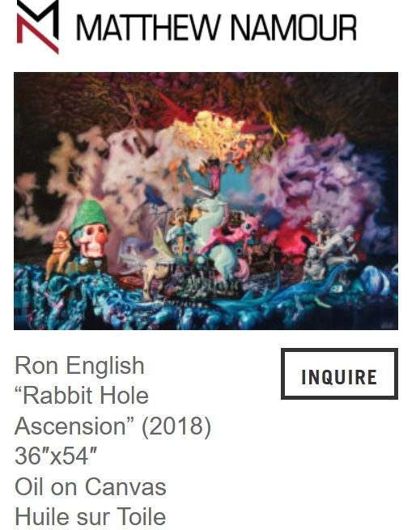

Provenance
Artist's personal collection.
Exhibitions
Universal Grin, Galerie Matthew Namour, Montreal, Canada, October 18–November 18, 2018.
Literature
Ron English, Original Grin: The Art of Ron English (Paris: Cernunnos, 2019), p. 354. ISBN 978-2374950938.

Ron English, “Ron English AKA the Propaganda Pop Master,” Also Known As, 2021. Online.

“Ron English on His Upcoming Show "Universal Grin," at Matthew Namour Gallery in Montréal”, Juxtapoz, 2018.
__p004.jpg?v=20260724071411)
“Ron English on His Upcoming Show "Universal Grin," at Matthew Namour Gallery in Montréal”, Juxtapoz, 2018.

Notes
Also known as Rabbbit Hole Ascension.
This work appears on Matthew Namour Gallery’s exhibition page for Universal Grin, where it is listed as Rabbit Hole Ascension.
Ancillary Documentation



Selected Online Circulation
Selected source documenting the exhibition’s online circulation.